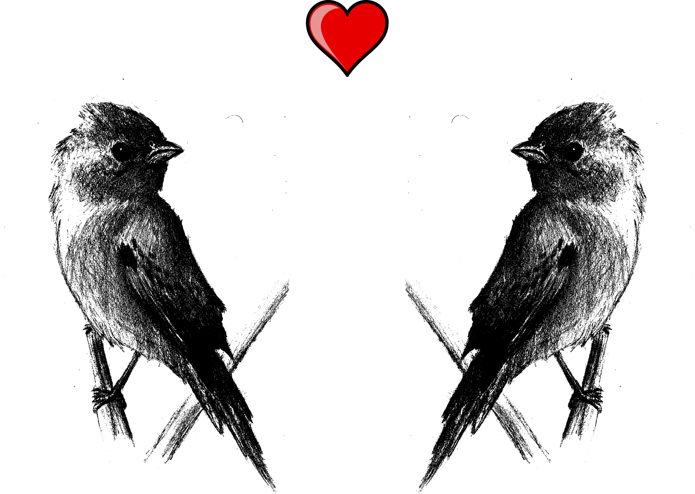
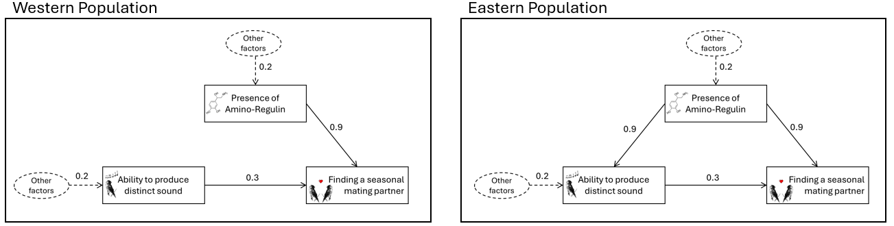
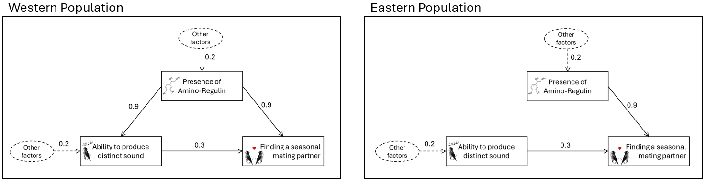
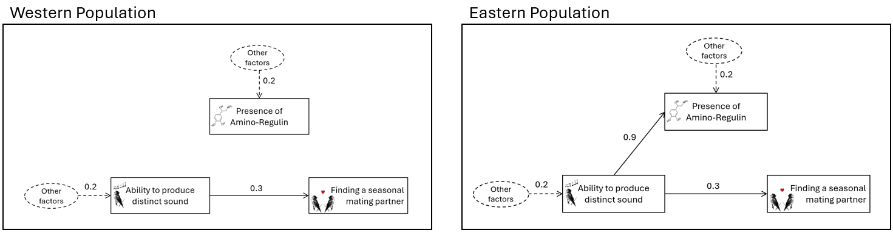
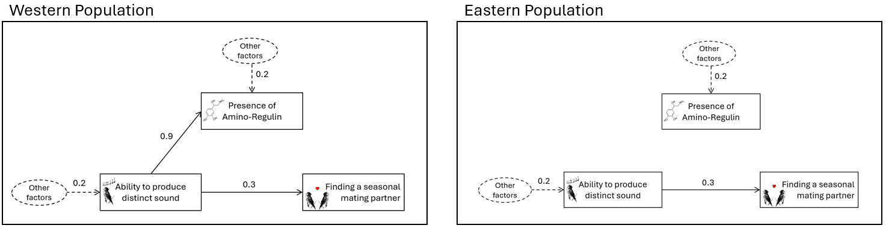

<!DOCTYPE html>
<html>
  <head>
    <title>Demo</title>
    <script src="jspsych/jspsych.js"></script>
    <script src="jspsych/plugin-html-button-response.js"></script>
    <script src="jspsych/plugin-survey-multi-choice.js"></script>
    <script src="jspsych/plugin-html-slider-response.js"></script>
	<script src="jspsych/plugin-image-keyboard-response.js"></script>
  <script src="jspsych/plugin-image-button-response.js"></script>
  <script src="jspsych/plugin-image-slider-response.js"></script>
	<script src="jspsych/plugin-html-keyboard-response.js"></script>
  <script src="jspsych/plugin-survey-likert.js"></script>
    <script src="jspsych/plugin-preload.js"></script>
    <script src="jspsych/plugin-survey-text.js"></script>
    <script src="jspsych/plugin-survey-html-form.js"></script>
    <link href="jspsych/jspsych.css" rel="stylesheet" type="text/css" />
  </head>
  <body></body>
  <script>
  

  document.addEventListener('contextmenu', function(e) {
  e.preventDefault();
}); 

// run study with ?demo=true at the end of url to have the demo mode


var jsPsych = initJsPsych({
  experiment_width: 1200,
  on_finish: function(){
    window.location = "https://app.prolific.com/submissions/complete?cc=CULU92YV"
  }
});

// handle demo mode vs. test mode

var demo_mode = false; // in demo mode, answers to questions are not required and instruction test is always passed

function answ_req() {
   var ans_required; 
   if(demo_mode == true){
    ans_required = false
   }
   else{ans_required = true}
   return ans_required;
}

var answ_required = answ_req();

console.log("demo mode = "+demo_mode, ", answers required: "+answ_required);


//var condition = CONDITION; 
var condition;


jsPsych.data.addProperties({condition: +condition});

var subj_code;

function makeid(length) {
    var result           = '';
    var characters       = 'ABCDEFGHIJKLMNOPQRSTUVWXYZabcdefghijklmnopqrstuvwxyz0123456789';
    var charactersLength = characters.length;
    for ( var i = 0; i < length; i++ ) {
      result += characters.charAt(Math.floor(Math.random() * 
 charactersLength));
   }
   return result;
}

subj_code = makeid(12);

console.log(subj_code);

jsPsych.data.addProperties({subj_code: subj_code});


/* create timeline */
var timeline = [];

/* preload images */
var preload = {
  type: jsPsychPreload,
  images: [

    // uni logo
    "img/uni_org_color_li.png", 

     "img/scenario_illu.png",
    // causal structures
    "img/ic_cccf.png",
    "img/sl_cc.png",

    "img/cccf_ic.png",
    "img/cc_sl.png",
    
    // index cards

    "img/index_comparison.png"
    

  ]
}
timeline.push(preload);

var styles = `
  p {
    text-align: justify
  }
  
`
var styleSheet = document.createElement("style")
styleSheet.type = "text/css"
styleSheet.innerText = styles
document.head.appendChild(styleSheet)


//////////////////////////////////////////////////////
/* Condition selection (just for offline demo) */


var select = {
  type: jsPsychSurveyText,
  questions: [
    {
		prompt: 
		`
		<p><b>This study is in DEMO MODE.</b></p>
		
		<p>Select a condition: </p>

    <p>1 and 2: independent causes vs. common cause confounder (difference is presentation order)</p>
    <p>3 and 4: single-link cause vs. common cause (difference is presentation order)</p>

		`, 
		placeholder: 'number between 1 and 4',
		required: answ_required,
		name: 'CondSel',
	},
  ],
	on_finish: function(data){
	condition = data.response.CondSel;
	console.log(condition);
	} 
}

var cond_selected = {
    type: jsPsychHtmlButtonResponse,
    stimulus: function () {
    return "You chose to see Condition "+condition;
		},
    choices: ['Continue']
};
timeline.push(select, cond_selected);


var EnterProlificID = {
  type: jsPsychSurveyText,
  questions: [
    {
		prompt: 
		`
		<p><b>First, please enter your Prolific-ID:</b></p>
		`, 
		placeholder: 'Prolific-ID',
		required: answ_required,
		name: 'PROLIFIC_PID',
	},
  ],
	on_finish: function(data){
	  jsPsych.data.addProperties({PROLIFIC_PID: data.response.PROLIFIC_PID});
	} 
}
//timeline.push(EnterProlificID);


///////////////////////////////////////// ic vs. cccf 

var scenario_ic_cccf = `
                    <p style="text-align:center;"></img></p>

                    <p><i>Please read the following (fictitious) scenario thoroughly:</i></p>

                    <p>Ornithologists in New Guinea are investigating the reproductive behavior of the "Sunstreak Flutterwing", a species of bird-of-paradise. 
                      A notable observation is that only some male birds attract seasonal female mating partners, while others remain solitary during the mating season. 
                      The phenomenon has been observed in two isolated populations, the Western Sunstreak Flutterwing and the Eastern Sunstreak Flutterwing.</p>

                    <p>We will now describe the factors influencing mating success in these two populations and how they are causally related. 
                      Below you can see two diagrams showing the relevant factors and their causal relations.</p>

                    <p style="text-align:center;"></img></p>

                    <p><u>Ability to produce a distinct sound</u></p>

                    <p>Some male birds can produce a distinct high-pitched sound. The ability to produce this distinct sound has a direct causal influence on female birds. 
                      This is indicated by the arrow going from "Ability to produce distinct sound" to "Finding a seasonal mating partner". 
                      Females tend to find this sound attractive, leading them to choose males who can produce it as their seasonal mating partners.
                    </p>

                    <p><u>Presence of the hormone Amino-Regulin</u></p>

                    <p>Some male birds have a hormone called Amino-Regulin in their blood. Having the hormone also has a direct causal influence on female birds. 
                    This is indicated by the arrow going from "Presence of Amino-Regulin" to "Finding a seasonal mating partner". Females can detect Amino-Regulin using a special sensory organ in their beak. 
                    Females tend to find the hormone attractive, which leads them to choose males who have it as seasonal mating partners.</p>

                    <p>Importantly, females only mate with males who produce the distinct sound or have the hormone (or both). 
                      In other words, males who neither have the ability to produce the special sound nor have the hormone don't find mating partners.</p>

                    <p><u>Difference between the two populations</u></p>

                    <p>In the <u>Western</u> bird population, the distinct sound production and the presence of Amino-Regulin are <b>independent factors</b>. 
                      The presence of one <b>does not causally influence</b> the presence of the other. In the diagram of the Western population, 
                      this is depicted by the <u>absence</u> of an arrow between "Ability to produce distinct sound" and "Presence of Amino-Regulin".</p></p>
                    
                    <p>In the <u>Eastern</u> bird population, the distinct sound production and the presence of Amino-Regulin are <b>dependent</b> factors. 
                      The presence of one <b>causally influences</b> the presence of the other. 
                      This is because a genetic mutation in Eastern birds led to the development of Amino-Regulin receptors in their vocal cord cells. 
                      When Amino-Regulin binds to these receptors, it <u>enables their body to produce the distinct sound</u>. 
                      In the diagram of the Eastern population, this is depicted by the <u>presence</u> of an arrow going from "Presence of Amino-Regulin" to "Ability to produce distinct sound".</p>

                    <p>You've now learned the general causal structure of the relevant variables in the two bird populations. On the next screen, we will explain what the numbers on the causal arrows mean.</p>

                    <p><i>If you've thoroughly read and understood the presented information, please click "Continue" to proceed.</i></p>       
`

var scenario_ic_cccf_2 = `

                    <p>Below, you see the two causal diagrams again, so you don't have to remember them. On this screen, you will learn what the numbers on the different causal arrows mean. 
                      Please study the information on this screen thoroughly.</p>

                    <p style="text-align:center;"></img></p>

                    <p><b><u>Numbers on the solid arrows:</u></b></p>

                    <p>The numbers on the arrows represent the strengths of the individual causal links.</p>

                    <p><span>&#8226;</span> The value of 0.3 on the arrow from "Ability to produce the distinct sound" to "Finding a seasonal mating partner" indicates that a male
                      who can produce the distinct sound has a 30% chance of finding a mating partner, even if he doesn't have the hormone.</p>

                    <p><span>&#8226;</span> The value of 0.9 on the arrow from "Presence of Amino-Regulin" to "Finding a seasonal mating partner" indicates that a male with Amino-Regulin
                      in his blood has a 90% chance of finding a seasonal mating partner, even if he isn't capable of producing the distinct sound.</p>

                    <p><span>&#8226;</span> In the <u>Eastern</u> population, the label 0.9 on the arrow leading from "Presence of Amino-Regulin" to "Ability to produce distinct sound" indicates
                      that a male who has the hormone in his blood has a 90% chance of being able to produce the distinct sound,
                      unless he already can produce the sound due to other unspecified factors (see information about dashed arrows below).</p>

                    <p><b><u>Numbers on the dashed arrows:</u></b></p>

                    <p>The dashed arrows pointing to "Ability to produce distinct sound" and "Presence of Amino-Regulin" indicate the natural frequencies with which male birds possess these features, due to other unspecified factors.</p>

                    <p><span>&#8226;</span> The value of 0.2 for the arrow pointing to "Presence of Amino-Regulin" means that only 20% of all male birds have Amino-Regulin in their blood, due to other unspecified factors.</p>

                    <p><span>&#8226;</span> In the <u>Western</u> population, the value of 0.2 on the arrow pointing to "Ability to produce distinct sound" indicates that only 20% of all males are capable of producing the distinct sound, due to other unspecified factors.</p>

                    <p><span>&#8226;</span> In the <u>Eastern</u> population, the value of 0.2 on the arrow pointing to "Ability to produce distinct sound" indicates that only 20% of all males without Amino-Regulin in their blood are capable of producing the distinct sound, due to other unspecified factors.</p>

                    <p><span>&#8226;</span> The absence of dashed arrows pointing to "Finding a seasonal mating partner" means that there are no other external factors influencing the chance of finding a seasonal mating partner.</p>

                    <p><i>If you've thoroughly read and understood the presented information, please click "Continue" to proceed.</i></p> 
`


var scenario_cccf_ic = `
                    <p style="text-align:center;"></img></p>

                    <p><i>Please read the following (fictitious) scenario thoroughly:</i></p>

                    <p>Ornithologists in New Guinea are investigating the reproductive behavior of the "Sunstreak Flutterwing", a species of bird-of-paradise. 
                      A notable observation is that only some male birds attract seasonal female mating partners, while others remain solitary during the mating season. 
                      The phenomenon has been observed in two isolated populations, the Western Sunstreak Flutterwing and the Eastern Sunstreak Flutterwing.</p>

                    <p>We will now describe the factors influencing mating success in these two populations and how they are causally related. 
                      Below you can see two diagrams showing the relevant factors and their causal relations.</p>

                    <p style="text-align:center;"></img></p>

                    <p><u>Ability to produce a distinct sound</u></p>

                    <p>Some male birds can produce a distinct high-pitched sound. The ability to produce this distinct sound has a direct causal influence on female birds. 
                      This is indicated by the arrow going from "Ability to produce distinct sound" to "Finding a seasonal mating partner". 
                      Females tend to find this sound attractive, leading them to choose males who can produce it as their seasonal mating partners.
                    </p>

                    <p><u>Presence of the hormone Amino-Regulin</u></p>

                    <p>Some male birds have a hormone called Amino-Regulin in their blood. Having the hormone also has a direct causal influence on female birds. 
                    This is indicated by the arrow going from "Presence of Amino-Regulin" to "Finding a seasonal mating partner". Females can detect Amino-Regulin using a special sensory organ in their beak. 
                    Females tend to find the hormone attractive, which leads them to choose males who have it as seasonal mating partners.</p>

                    <p>Importantly, females only mate with males who produce the distinct sound or have the hormone (or both). 
                      In other words, males who neither have the ability to produce the special sound nor have the hormone don't find mating partners.</p>

                    <p><u>Difference between the two populations</u></p>

                    <p>In the <u>Eastern</u> bird population, the distinct sound production and the presence of Amino-Regulin are <b>independent factors</b>. 
                      The presence of one <b>does not causally influence</b> the presence of the other. In the diagram of the Eastern population, 
                      this is depicted by the <u>absence</u> of an arrow between "Ability to produce distinct sound" and "Presence of Amino-Regulin".</p></p>
                    
                    <p>In the <u>Western</u> bird population, the distinct sound production and the presence of Amino-Regulin are <b>dependent</b> factors. 
                      The presence of one <b>causally influences</b> the presence of the other. 
                      This is because a genetic mutation in Western birds led to the development of Amino-Regulin receptors in their vocal cord cells. 
                      When Amino-Regulin binds to these receptors, it <u>enables their body to produce the distinct sound</u>. 
                      In the diagram of the Western population, this is depicted by the <u>presence</u> of an arrow going from "Presence of Amino-Regulin" to "Ability to produce distinct sound".</p>

                    <p>You've now learned the general causal structure of the relevant variables in the two bird populations. On the next screen, we will explain what the numbers on the causal arrows mean.</p>

                    <p><i>If you've thoroughly read and understood the presented information, please click "Continue" to proceed.</i></p>       
`

var scenario_cccf_ic_2 = `

                    <p>Below, you see the two causal diagrams again, so you don't have to remember them. On this screen, you will learn what the numbers on the different causal arrows mean. 
                      Please study the information on this screen thoroughly.</p>

                    <p style="text-align:center;"></img></p>

                    <p><b><u>Numbers on the solid arrows:</u></b></p>

                    <p>The numbers on the arrows represent the strengths of the individual causal links.</p>

                    <p><span>&#8226;</span> The value of 0.3 on the arrow from "Ability to produce the distinct sound" to "Finding a seasonal mating partner" indicates that a male
                      who can produce the distinct sound has a 30% chance of finding a mating partner, even if he doesn't have the hormone.</p>

                    <p><span>&#8226;</span> The value of 0.9 on the arrow from "Presence of Amino-Regulin" to "Finding a seasonal mating partner" indicates that a male with Amino-Regulin
                      in his blood has a 90% chance of finding a seasonal mating partner, even if he isn't capable of producing the distinct sound.</p>

                    <p><span>&#8226;</span> In the <u>Western</u> population, the label 0.9 on the arrow leading from "Presence of Amino-Regulin" to "Ability to produce distinct sound" indicates
                      that a male who has the hormone in his blood has a 90% chance of being able to produce the distinct sound,
                      unless he already can produce the sound due to other unspecified factors (see information about dashed arrows below).</p>

                    <p><b><u>Numbers on the dashed arrows:</u></b></p>

                    <p>The dashed arrows pointing to "Ability to produce distinct sound" and "Presence of Amino-Regulin" indicate the natural frequencies with which male birds possess these features, due to other unspecified factors.</p>

                    <p><span>&#8226;</span> The value of 0.2 for the arrow pointing to "Presence of Amino-Regulin" means that only 20% of all male birds have Amino-Regulin in their blood, due to other unspecified factors.</p>

                    <p><span>&#8226;</span> In the <u>Eastern</u> population, the value of 0.2 on the arrow pointing to "Ability to produce distinct sound" indicates that only 20% of all males are capable of producing the distinct sound, due to other unspecified factors.</p>

                    <p><span>&#8226;</span> In the <u>Western</u> population, the value of 0.2 on the arrow pointing to "Ability to produce distinct sound" indicates that only 20% of all males without Amino-Regulin in their blood are capable of producing the distinct sound, due to other unspecified factors.</p>

                    <p><span>&#8226;</span> The absence of dashed arrows pointing to "Finding a seasonal mating partner" means that there are no other external factors influencing the chance of finding a seasonal mating partner.</p>

                    <p><i>If you've thoroughly read and understood the presented information, please click "Continue" to proceed.</i></p> 
`


/////////////////////////////////////// sl vs. ce

var scenario_sl_cc = `
                    <p style="text-align:center;"></img></p>

                    <p><i>Please read the following (fictitious) scenario thoroughly:</i></p>

                    <p>Ornithologists in New Guinea are investigating the reproductive behavior of the "Sunstreak Flutterwing", a species of bird-of-paradise. 
                      A notable observation is that only some male birds attract seasonal female mating partners, while others remain solitary during the mating season. 
                      The phenomenon has been observed in two isolated populations, the Western Sunstreak Flutterwing and the Eastern Sunstreak Flutterwing.</p>

                    <p>We will now describe the factors influencing mating success in these two populations and how they are causally related. 
                      Below you can see two diagrams showing the relevant factors and their causal relations.</p>

                    <p style="text-align:center;"></img></p>

                    <p><u>Ability to produce a distinct sound</u></p>

                    <p>Some male birds can produce a distinct high-pitched sound. The ability to produce this distinct sound has a direct causal influence on female birds. 
                      This is indicated by the arrow going from "Ability to produce distinct sound" to "Finding a seasonal mating partner". 
                      Females tend to find this sound attractive, leading them to choose males who can produce it as their seasonal mating partners.
                    </p>

                    <p><u>Presence of the hormone Amino-Regulin</u></p>

                    <p>Some male birds have a hormone called Amino-Regulin in their blood. For a while, this hormone was assumed to play a role in a male bird's chances of finding a mating partner. 
                    This turned out not be the case, however. The hormone plays a physiological function in the birds metabolism completely unrelated to mating success. 
                    The absence of a causal influence of the hormone on mating success is indicated by the <u>absence</u> of an arrow going from "Presence of Amino-Regulin" 
                    to "Finding a seasonal mating partner". 
                    </p>

                    <p>Importantly, females only mate with males who produce the distinct sound. 
                      In other words, males who don't have the ability to produce the special sound don't find mating partners.</p>

                    <p><u>Difference between the two populations</u></p>

                    <p>In the <u>Western</u> bird population, the distinct sound production and the presence of Amino-Regulin are <b>independent factors</b>. 
                      The presence of one <b>does not causally influence</b> the presence of the other. In the diagram of the Western population, 
                      this is depicted by the <u>absence</u> of an arrow between "Ability to produce distinct sound" and "Presence of Amino-Regulin".</p></p>
                    
                    <p>In the <u>Eastern</u> bird population, the distinct sound production and the presence of Amino-Regulin are <b>dependent</b> factors. 
                      The presence of one <b>causally influences</b> the presence of the other. This is because a genetic mutation in Eastern birds led to the development of an audio-cortical feedback circuit. 
                      When male birds sing the distinct sound, it <u>enables their body to produce the hormone Amino-Regulin</u>. In the diagram of the Eastern population, 
                      this is depicted by the <u>presence</u> of an arrow going from "Ability to produce distinct sound" to "Presence of Amino-Regulin".</p>

                    <p>You've now learned the general causal structure of the relevant variables in the two bird populations. On the next screen, we will explain what the numbers on the causal arrows mean.</p>
`
     

scenario_sl_cc_2 = `

                    <p>Below, you see the two causal diagrams again, so you don't have to remember them. On this screen, you will learn what the numbers on the different causal arrows mean. 
                      Please study the information on this screen thoroughly.</p>

                    <p style="text-align:center;"></img></p>

                     <p><b><u>Numbers on the solid arrows:</u></b></p>

                    <p>The numbers on the arrows represent the strengths of the individual causal links.</p>

                    <p><span>&#8226;</span> The value of 0.3 on the arrow from "Ability to produce the distinct sound" to "Finding a seasonal mating partner" indicates that a male
                      who can produce the distinct sound has a 30% chance of finding a mating partner, even if he doesn't have the hormone.</p>

                    <p><span>&#8226;</span> In the <u>Eastern</u> population, the label 0.9 on the arrow leading from "Ability to produce distinct sound" to "Presence of Amino-Regulin" indicates 
                      that a male who can produce the distinct sound has a 90% chance of having the hormone in his blood, 
                      unless he already has the hormone due to other unspecified factors (see information about dashed arrows below).</p>


                    <p><b><u>Numbers on the dashed arrows:</u></b></p>

                    <p>The dashed arrows pointing to "Ability to produce distinct sound" and "Presence of Amino-Regulin" indicate the natural frequencies with which male birds possess these features, due to other unspecified factors.</p>

                    <p><span>&#8226;</span> The value of 0.2 on the arrow pointing to "Ability to produce distinct sound" indicates that only 20% of all males are capable of producing the distinct sound, due to other unspecified factors.</p>
                    
                    <p><span>&#8226;</span> In the <u>Western</u> population, the value of 0.2 for the arrow pointing to "Presence of Amino-Regulin" means that only 20% of all male birds have Amino-Regulin in their blood, due to other unspecified factors.</p>

                    <p><span>&#8226;</span> In the <u>Eastern</u> population, the value of 0.2 for the arrow pointing to "Presence of Amino-Regulin" means that only 20% of male birds who cannot produce the distinct sound have Amino-Regulin in their blood, due to other unspecified factors.</p>
                    
                    <p><span>&#8226;</span> The absence of dashed arrows pointing to "Finding a seasonal mating partner" means that there are no other external factors influencing the chance of finding a seasonal mating partner.</p>

                    <p><i>If you've thoroughly read and understood the presented information, please click "Continue" to proceed.</i></p>    
`


var scenario_cc_sl = `
                    <p style="text-align:center;"></img></p>

                    <p><i>Please read the following (fictitious) scenario thoroughly:</i></p>

                    <p>Ornithologists in New Guinea are investigating the reproductive behavior of the "Sunstreak Flutterwing", a species of bird-of-paradise. 
                      A notable observation is that only some male birds attract seasonal female mating partners, while others remain solitary during the mating season. 
                      The phenomenon has been observed in two isolated populations, the Western Sunstreak Flutterwing and the Eastern Sunstreak Flutterwing.</p>

                    <p>We will now describe the factors influencing mating success in these two populations and how they are causally related. 
                      Below you can see two diagrams showing the relevant factors and their causal relations.</p>

                    <p style="text-align:center;"></img></p>

                    <p><u>Ability to produce a distinct sound</u></p>

                    <p>Some male birds can produce a distinct high-pitched sound. The ability to produce this distinct sound has a direct causal influence on female birds. 
                      This is indicated by the arrow going from "Ability to produce distinct sound" to "Finding a seasonal mating partner". 
                      Females tend to find this sound attractive, leading them to choose males who can produce it as their seasonal mating partners.
                    </p>

                    <p><u>Presence of the hormone Amino-Regulin</u></p>

                    <p>Some male birds have a hormone called Amino-Regulin in their blood. For a while, this hormone was assumed to play a role in a male bird's chances of finding a mating partner. 
                    This turned out not be the case, however. The hormone plays a physiological function in the birds metabolism completely unrelated to mating success. 
                    The absence of a causal influence of the hormone on mating success is indicated by the <u>absence</u> of an arrow going from "Presence of Amino-Regulin" 
                    to "Finding a seasonal mating partner". 
                    </p>

                    <p>Importantly, females only mate with males who produce the distinct sound. 
                      In other words, males who don't have the ability to produce the special sound don't find mating partners.</p>

                    <p><u>Difference between the two populations</u></p>

                    <p>In the <u>Eastern</u> bird population, the distinct sound production and the presence of Amino-Regulin are <b>independent factors</b>. 
                      The presence of one <b>does not causally influence</b> the presence of the other. In the diagram of the Eastern population, 
                      this is depicted by the <u>absence</u> of an arrow between "Ability to produce distinct sound" and "Presence of Amino-Regulin".</p></p>
                    
                    <p>In the <u>Western</u> bird population, the distinct sound production and the presence of Amino-Regulin are <b>dependent</b> factors. 
                      The presence of one <b>causally influences</b> the presence of the other. This is because a genetic mutation in Western birds led to the development of an audio-cortical feedback circuit. 
                      When male birds sing the distinct sound, it <u>enables their body to produce the hormone Amino-Regulin</u>. In the diagram of the Western population, 
                      this is depicted by the <u>presence</u> of an arrow going from "Ability to produce distinct sound" to "Presence of Amino-Regulin".</p>

                    <p>You've now learned the general causal structure of the relevant variables in the two bird populations. On the next screen, we will explain what the numbers on the causal arrows mean.</p>
`
     

scenario_cc_sl_2 = `

                    <p>Below, you see the two causal diagrams again, so you don't have to remember them. On this screen, you will learn what the numbers on the different causal arrows mean. 
                      Please study the information on this screen thoroughly.</p>

                    <p style="text-align:center;"></img></p>

                     <p><b><u>Numbers on the solid arrows:</u></b></p>

                    <p>The numbers on the arrows represent the strengths of the individual causal links.</p>

                    <p><span>&#8226;</span> The value of 0.3 on the arrow from "Ability to produce the distinct sound" to "Finding a seasonal mating partner" indicates that a male
                      who can produce the distinct sound has a 30% chance of finding a mating partner, even if he doesn't have the hormone.</p>

                    <p><span>&#8226;</span> In the <u>Western</u> population, the label 0.9 on the arrow leading from "Ability to produce distinct sound" to "Presence of Amino-Regulin" indicates 
                      that a male who can produce the distinct sound has a 90% chance of having the hormone in his blood, 
                      unless he already has the hormone due to other unspecified factors (see information about dashed arrows below).</p>


                    <p><b><u>Numbers on the dashed arrows:</u></b></p>

                    <p>The dashed arrows pointing to "Ability to produce distinct sound" and "Presence of Amino-Regulin" indicate the natural frequencies with which male birds possess these features, due to other unspecified factors.</p>

                    <p><span>&#8226;</span> The value of 0.2 on the arrow pointing to "Ability to produce distinct sound" indicates that only 20% of all males are capable of producing the distinct sound, due to other unspecified factors.</p>
                    
                    <p><span>&#8226;</span> In the <u>Eastern</u> population, the value of 0.2 for the arrow pointing to "Presence of Amino-Regulin" means that only 20% of all male birds have Amino-Regulin in their blood, due to other unspecified factors.</p>

                    <p><span>&#8226;</span> In the <u>Western</u> population, the value of 0.2 for the arrow pointing to "Presence of Amino-Regulin" means that only 20% of male birds who cannot produce the distinct sound have Amino-Regulin in their blood, due to other unspecified factors.</p>
                    
                    <p><span>&#8226;</span> The absence of dashed arrows pointing to "Finding a seasonal mating partner" means that there are no other external factors influencing the chance of finding a seasonal mating partner.</p>

                    <p><i>If you've thoroughly read and understood the presented information, please click "Continue" to proceed.</i></p>    
`
        

//////////////////////////////////////////////////////
/* Confirmations */


var confs = {
          type: jsPsychSurveyMultiChoice,
          questions: [
            {
              prompt: "This study works properly only on Desktop PCs and Laptops, and not on Smartphones or Tablets. Before you proceed, please confirm that you take part via Desktop PC or Laptop.", 
              name: 'DesktopConf', 
              options: ['1: I confirm', '2: I do not confirm'], 
              required: answ_required
            }, 
            {
              prompt: "For the scientific utility of the results, it is very important that you provide complete and careful responses. How seriously will you take your participation in the study?", 
              name: 'AttentConf', 
              options: ['1: I will take it seriously', '2: I will not take it seriously'], 
              required: answ_required
            }, 
          ],
          on_finish: function(data){
            if(condition == 1){ 
              comparison = "ic_cccf";
              order = "ic left"
              scenario_text = [scenario_ic_cccf, scenario_ic_cccf_2];
              structure_pic = "img/ic_cccf.png";
            }else if(condition == 2){ 
              comparison = "ic_cccf";
              order = "cccf left"
              scenario_text = [scenario_cccf_ic, scenario_cccf_ic_2];
              structure_pic = "img/cccf_ic.png";
            }else if(condition == 3){
              comparison = "sl_cc";
              order = "sl left"
              scenario_text = [scenario_sl_cc, scenario_sl_cc_2];
              structure_pic = "img/sl_cc.png"
            }else if(condition == 4){
              comparison = "sl_cc";
              order = "ce left"
              scenario_text = [scenario_cc_sl, scenario_cc_sl_2];
              structure_pic = "img/cc_sl.png"
            };
            jsPsych.data.addProperties({desktop_conf: data.response.DesktopConf, attent_conf: data.response.AttentConf, 
              comparison: comparison, order: order
            });
          },
          preamble: `
                      <p></img></p>
                      <p>Dear participant, thank you very much for helping us with this study!</p>
                      <p>Please note: This study contains memory and comprehension checks with which we aim to ensure that you correctly understood the central aspects of the study.</p>
                    `
    };

//////////////////////////////////////////////////////
/* Instructions ( all conditions) */


timeline.push(confs);


// use iframes in online study to present the stimuli 

//<br>
//  <iframe src="https://simonstephan31.github.io/stimulus_repository/learning_active.html" width="1100" height="600" style="border:none;"></iframe>
//<br>


//////////////////////////////////////////////////////////
/* Ins
tructions all conditions */

var general_instr = {
    type: jsPsychHtmlButtonResponse,
    stimulus:[function(){return`
      <p>On the next screen, you will read about a fictitious scenario that we use to study our research question. 
          It is important that you understand the information and assume that everything is exactly as described (even if aspects of it may appear implausible to you).</p>

      <p><i>If you feel ready to proceed, please click the "Continue" button below.</i></p>
      ` 
    }
    ],
    choices: ['Continue']
}; 

timeline.push(general_instr);

//////////////////////////////////////////////////////////// Structure informatoin


var instr_structure = {
    type: jsPsychHtmlButtonResponse,
    stimulus:[function(){return`
      `+scenario_text[0]+`
      ` 
    }
    ],
    choices: ['Continue']
}; 

var instr_params = {
    type: jsPsychHtmlButtonResponse,
    stimulus:[function(){return`
      `+scenario_text[1]+`
      ` 
    }
    ],
    choices: ['Continue']
}; 


timeline.push(instr_structure, instr_params);


var test_instr = {
    type: jsPsychHtmlButtonResponse,
    stimulus:[function(){return`
      <p>You've now learned all the relevant information about the two bird populations. On the next screen, we'll show you two male birds that were randomly sampled from the scientists' data bank.
        We will ask you to study the information about them and to predict how likely each of them is to find a seasonal mating partner.</p>

      <p><i>If you feel ready to proceed, please click the "Continue" button below.</i></p>
      ` 
    }
    ],
    choices: ['Continue']
}; 

timeline.push(test_instr);


///////////////////////////////////////////////////// Test Cases 


var test_trial = {
  type: jsPsychSurveyHtmlForm,
  preamble: function(){return`
            <p><i>Below you see the two causal structures again, so you don't have to remember them.</i></p>

            <p style="text-align:center;"></img></p>

            <hr>

            <p>Now consider the two male birds shown below. The available information about them comes from the scientists' data bank and is written on two index cards.</p>

            <p style="text-align:center;"></img></p>

            <p>As you can see from the two index cards, one bird comes from the Western population and the other one from the Eastern population.
              As you can also see, both male birds have a "YES" entry for "Ability to produce the distinct sound", which means that both can produce the distinct sound.
              Whether they also have Amino-Regulin in their blood is unknown, however, because the scientists have not yet had the opportunity to take blood samples from these two birds.</p>

            <p>For each bird, the scientists would like to know the probability that it will find a seasonal mating partner, given the information they have about it and given what they know about the two populations.</p>

            <hr>
            
            <p><i>If you've studied the presented information, please answer the two questions below.</i></p>

        `},
  html: `
    <style>
      /* Base style for the slider track */
      input[type="range"] {
        -webkit-appearance: none; /* Required for custom styling */
        width: 100%;
        height: 8px; /* Or whatever height you prefer for the track */
        background: #d3d3d3; /* Default background for the empty track */
        outline: none;
        opacity: 0.7; /* Make the initial track a bit faded */
        transition: opacity .2s;
        border-radius: 5px; /* Rounded corners for the track */
      }

      /* Style for the thumb (knob) */
      input[type="range"]::-webkit-slider-thumb {
        -webkit-appearance: none;
        width: 20px; /* Size of the knob */
        height: 20px;
        border-radius: 50%; /* Make it round */
        background: #00008B; /* Dark Blue Knob Color */
        cursor: pointer;
        opacity: 0; /* Make the knob transparent initially */
        transition: opacity 0.2s ease-in-out; /* Smooth transition when it appears */
        margin-top: -6px; /* Adjust vertical position of the knob relative to the track */
      }
      input[type="range"]::-moz-range-thumb {
        width: 20px;
        height: 20px;
        border-radius: 50%;
        background: #00008B; /* Dark Blue Knob Color */
        cursor: pointer;
        opacity: 0;
        transition: opacity 0.2s ease-in-out;
      }
      input[type="range"]::-ms-thumb {
        width: 20px;
        height: 20px;
        border-radius: 50%;
        background: #00008B; /* Dark Blue Knob Color */
        cursor: pointer;
        opacity: 0;
        transition: opacity 0.2s ease-in-out;
      }

      /* Styles to hide the filled track portion initially */
      input[type="range"]::-webkit-slider-runnable-track {
        background: transparent; /* Make the filled part transparent initially */
        transition: background 0.2s ease-in-out;
      }
      input[type="range"]::-moz-range-track {
        background: transparent;
        transition: background 0.2s ease-in-out;
      }
      input[type="range"]::-ms-fill-lower { /* For IE/Edge older versions */
        background: transparent;
        transition: background 0.2s ease-in-out;
      }
      input[type="range"]::-ms-fill-upper { /* Make upper part transparent too */
        background: transparent;
        transition: background 0.2s ease-in-out;
      }

      /* Styles to show the thumb and filled track when the 'touched' class is added */
      input[type="range"].touched::-webkit-slider-thumb {
        opacity: 1; /* Make the knob visible */
      }
      input[type="range"].touched::-webkit-slider-runnable-track {
        background: #2196F3; /* This is the blue fill for the track */
      }

      input[type="range"].touched::-moz-range-thumb {
        opacity: 1;
      }
      input[type="range"].touched::-moz-range-track {
        background: #2196F3; /* This is the blue fill for the track */
      }

      input[type="range"].touched::-ms-thumb {
        opacity: 1;
      }
      input[type="range"].touched::-ms-fill-lower {
        background: #2196F3; /* This is the blue fill for the track */
      }
      input[type="range"].touched::-ms-fill-upper {
        background: transparent; /* Keep upper part transparent or change as needed */
      }

      /* Style for the value display span - reverted to previous settings */
      .slider-value-display {
        font-weight: bold;
        margin-top: 5px; /* Space between slider and value */
        display: block; /* Ensures it takes full width and new line */
        text-align: center;
        visibility: hidden; /* Hidden initially */
        opacity: 0; /* For smooth fade-in */
        transition: opacity 0.2s ease-in-out, visibility 0.2s ease-in-out;
      }
      /* When 'touched' class is applied to the slider, make its associated value display visible */
      .slider-value-display.visible {
        visibility: visible;
        opacity: 1;
      }

    </style>

    <div style="margin-bottom: 30px;">
      <p><b>First, consider the left male bird from the Western population. Based on what you have learned, what's the probability that this male bird will find a seasonal mating partner?</b>
        <i>Please use the scale below to provide an estimate. You first have to click on the scale to select a value. A knob will then appear, which you can drag to the precise value you'd like to select.</i></p>
      <input type="range" id="slider1" name="response_q1" min="0" max="100" value="50" step="1" style="width: 100%;" data-interacted="false">
      <div style="display: flex; justify-content: space-between;">
        <span>0%</span>
        <span>100%</span>
      </div>
      <span id="slider1-value" class="slider-value-display"></span>
    </div>

    <div style="margin-bottom: 30px;">
      <p><b>Now consider the right male bird from the Eastern population. Based on what you have learned, what's the probability that this male bird will find a seasonal mating partner?</b>
        <i>Please use the scale below to provide an estimate. You first have to click on the scale to select a value. A knob will then appear, which you can drag to the precise value you'd like to select.</i></p>
      <input type="range" id="slider2" name="response_q2" min="0" max="100" value="50" step="1" style="width: 100%;" data-interacted="false">
      <div style="display: flex; justify-content: space-between;">
        <span>0%</span>
        <span>100%</span>
      </div>
      <span id="slider2-value" class="slider-value-display"></span>
    </div>
  `,
  on_load: function() {
    // Access the demo_mode variable.
    // If 'demo_mode' is a global variable, you can use it directly.
    // If 'demo_mode' is passed via trial properties (e.g., in a timeline variable),
    // you would access it like: const current_demo_mode = jsPsych.timeline.currentTrial().demo_mode;
    // For this example, I'll assume it's a global variable or directly accessible.
    const current_demo_mode = (typeof demo_mode !== 'undefined' && demo_mode === true);


    const slider1 = document.getElementById('slider1');
    const slider2 = document.getElementById('slider2');
    const slider1ValueDisplay = document.getElementById('slider1-value');
    const slider2ValueDisplay = document.getElementById('slider2-value');

    const continueButton = document.querySelector('#jspsych-survey-html-form-next');

    // Function to update the displayed value
    const updateSliderValue = (slider, valueDisplayElement) => {
      valueDisplayElement.textContent = "selected value: " + slider.value + '%';
    };

    // Function to check if both sliders have been interacted with and enable/disable button
    const checkCompletion = () => {
      if (continueButton) {
        if (current_demo_mode) {
          continueButton.disabled = false; // Always enabled in demo mode
        } else {
          const slider1Interacted = slider1.dataset.interacted === 'true';
          const slider2Interacted = slider2.dataset.interacted === 'true';
          continueButton.disabled = !(slider1Interacted && slider2Interacted); // Enabled only if both interacted in non-demo mode
        }
      }
    };

    // Function to initialize and show slider parts and set 'data-interacted'
    const showSliderPartsAndSetInteracted = (event) => {
      const targetSlider = event.target;
      targetSlider.classList.add('touched');

      // Set the interacted flag to true (only relevant in non-demo mode)
      targetSlider.dataset.interacted = 'true';

      const valueDisplayId = targetSlider.id + '-value';
      const valueDisplayElement = document.getElementById(valueDisplayId);

      if (valueDisplayElement) {
        valueDisplayElement.classList.add('visible');
      }

      updateSliderValue(targetSlider, valueDisplayElement);

      checkCompletion(); // Check completion status

      // Remove the specific initial listeners after first interaction (only relevant in non-demo mode)
      if (!current_demo_mode) {
        targetSlider.removeEventListener('mouseup', showSliderPartsAndSetInteracted);
        targetSlider.removeEventListener('touchend', showSliderPartsAndSetInteracted);
      }
    };

    // Initial setup: Attach event listeners only if not in demo mode
    if (!current_demo_mode) {
      slider1.addEventListener('mouseup', showSliderPartsAndSetInteracted);
      slider1.addEventListener('touchend', showSliderPartsAndSetInteracted);
      slider2.addEventListener('mouseup', showSliderPartsAndSetInteracted);
      slider2.addEventListener('touchend', showSliderPartsAndSetInteracted);
    }


    // Attach 'input' event listeners to dynamically update the value as the slider is dragged
    // Also, ensure 'data-interacted' is set and completion checked if the user drags without a prior click
    slider1.addEventListener('input', () => {
      updateSliderValue(slider1, slider1ValueDisplay);
      if (!current_demo_mode) { // Only set interacted if not in demo mode
        slider1.dataset.interacted = 'true';
      }
      checkCompletion();
    });
    slider2.addEventListener('input', () => {
      updateSliderValue(slider2, slider2ValueDisplay);
      if (!current_demo_mode) { // Only set interacted if not in demo mode
        slider2.dataset.interacted = 'true';
      }
      checkCompletion();
    });

    // Initialize values (they will be hidden initially)
    updateSliderValue(slider1, slider1ValueDisplay);
    updateSliderValue(slider2, slider2ValueDisplay);

    // Perform an initial completion check
    checkCompletion();
  },
  on_finish: function(data) {
    const response_q1 = data.response.response_q1;
    const response_q2 = data.response.response_q2;

    console.log("Response to Question 1:", response_q1);
    console.log("Response to Question 2:", response_q2);

    data.q1_rating = response_q1;
    data.q2_rating = response_q2;

    if(condition % 2 === 0){
    jsPsych.data.addProperties({case_1: data.response.response_q2, case_2: data.response.response_q1});
    }else{
      jsPsych.data.addProperties({case_1: data.response.response_q1, case_2: data.response.response_q2});
    };

  }
};

timeline.push(test_trial);


/////////////////// Reason 

var reason = {
  type: jsPsychSurveyText,
  name: 'Subj_explanation',
  questions: [
    {prompt: `<p>Thank you for your two ratings. On this screen, we'd like to ask you to explain your reasoning for the ratings you provided. Please use the text box below to provide your explanation.</p>`, 
    rows: 10, 
    columns: 100, 
    required: answ_required,
    name: 'Subj_explanation'
    },
  ],
  on_finish: function(data){
	  jsPsych.data.addProperties({subj_explanation: data.response.Subj_explanation});
	  console.log(data.response.Subj_explanation)
  },
}
timeline.push(reason);


/////////////// memory checks 

var mem_check_ic_cccf = {
  type: jsPsychSurveyMultiChoice,
  name: 'mem_check',
  preamble: function (){return `<p>We'd now like to probe your understanding about the hormone "Amino-Regulin" in the two bird populations. Here's the graph again so you don't have to remember it:</p>
             <p style="text-align:center;"></img></p>`},
  questions: [
    {
      prompt: "<b>In the Eastern bird population, the hormone Amino-Regulin...</b>", 
      options: [
        `has a direct influence on mating success and it also has a direct influence on a male's ability to produce the distinct sound.`, 
        `has a direct influence on mating success, but it <u>does not</u> influence a male's ability to produce the distinct sound.`
      ],
      required: answ_required,
      name: 'A_check_Eastern'
    },
     {
      prompt: "<b>In the Western bird population, the hormone Amino-Regulin...</b>", 
      options: [
        `has a direct influence on mating success and it also has a direct influence on a male's ability to produce the distinct sound.`, 
        `has a direct influence on mating success, but it <u>does not</u> influence a male's ability to produce the distinct sound.`
      ],
      required: answ_required,
      name: 'A_check_Western'
    },
  ],
  on_finish: function(data){
    if(
      order == "ic left" 
      && data.response.A_check_Eastern == `has a direct influence on mating success and it also has a direct influence on a male's ability to produce the distinct sound.` 
      && data.response.A_check_Western == `has a direct influence on mating success, but it <u>does not</u> influence a male's ability to produce the distinct sound.`)
      {A_check = "correct"}
    else if(
      order != "ic left" 
      && data.response.A_check_Eastern != `has a direct influence on mating success and it also has a direct influence on a male's ability to produce the distinct sound.` 
      && data.response.A_check_Western != `has a direct influence on mating success but it <u>does not</u> influence a male's ability to produce the distinct sound.`)
      {A_check = "correct"}
    else{A_check = "incorrect"};
    console.log("check: "+A_check); 

	  jsPsych.data.addProperties({A_check: A_check});
  },
};


var mem_check_sl_cc = {
  type: jsPsychSurveyMultiChoice,
  name: 'mem_check',
  preamble: function (){return `<p>We'd now like to probe your understanding about the hormone "Amino-Regulin" in the two bird populations. Here's the graph again so you don't have to remember it:</p>
             <p style="text-align:center;"></img></p>`},
  questions: [
    {
      prompt: "<b>In the Eastern bird population, the hormone Amino-Regulin...</b>", 
      options: [
        `is influenced by a male's ability to produce the distinct sound, but Amino-Regulin has <u>no</u> causal influence on mating success.`, 
        `is <u>not</u> influenced by a male's ability to produce the distinct sound, and Amino-Regulin has <u>no</u> causal influence on mating success.`
      ],
      required: answ_required,
      name: 'A_check_Eastern'
    },
     {
      prompt: "<b>In the Western bird population, the hormone Amino-Regulin...</b>", 
      options: [
        `is influenced by a male's ability to produce the distinct sound, but Amino-Regulin has <u>no</u> causal influence on mating success.`, 
        `is <u>not</u> influenced by a male's ability to produce the distinct sound, and Amino-Regulin has <u>no</u> causal influence on mating success.`
      ],
      required: answ_required,
      name: 'A_check_Western'
    },
  ],
  on_finish: function(data){
    if(
      order == "sl left" 
      && data.response.A_check_Eastern == `is influenced by a male's ability to produce the distinct sound, but Amino-Regulin has <u>no</u> causal influence on mating success.` 
      && data.response.A_check_Western == `is <u>not</u> influenced by a male's ability to produce the distinct sound, and Amino-Regulin has <u>no</u> causal influence on mating success.`)
      {A_check = "correct"}
    else if(
      order != "sl left" 
      && data.response.A_check_Eastern != `is influenced by a male's ability to produce the distinct sound, but Amino-Regulin has <u>no</u> causal influence on mating success.` 
      && data.response.A_check_Western != `is <u>not</u> influenced by a male's ability to produce the distinct sound, and Amino-Regulin has <u>no</u> causal influence on mating success.`)
      {A_check = "correct"}
    else{A_check = "incorrect"};
    console.log("check: "+A_check); 

	  jsPsych.data.addProperties({A_check: A_check});
  },
};

var mem_check_ic_cccf_push = {
  timeline: [mem_check_ic_cccf],
  conditional_function: function () {
    if (comparison == "ic_cccf") {
      return true; 
    } else {
      return false;
    }
  }
}


var mem_check_sl_cc_push = {
  timeline: [mem_check_sl_cc],
  conditional_function: function () {
    if (comparison == "sl_cc") {
      return true; 
    } else {
      return false;
    }
  }
}


timeline.push(mem_check_ic_cccf_push, mem_check_sl_cc_push);


/////////////////////////////////////// demographics


var demogr_age = {
  type: jsPsychSurveyText,
  name: 'Age_query',
  questions: [
    {prompt: `<p><b>You've finished the main part of the study</b>. We have some final demographic questions. <br> Please enter your age in the text field below.</p>`, 
    placeholder: 'Age as a number', 
    required: answ_required,
    name: 'Age'
    },
  ],
  on_finish: function(data){
	  jsPsych.data.addProperties({age: data.response.Age});
  },
}


var demogr_gender = {
  type: jsPsychSurveyMultiChoice,
  name: 'gender_query',
  questions: [
    {
      prompt: "Please indicate the gender you identify with.", 
      options: ['1: male', '2: female', '3: non-binary', '4: prefer not to say'],
      required: answ_required,
      name: 'Gender'
    },
  ],
  on_finish: function(data){
	  jsPsych.data.addProperties({gender: data.response.Gender});
  },
};
timeline.push(demogr_age, demogr_gender);


/////////////////////////////////////// technical issues
var tech_issues = {
  type: jsPsychSurveyText,
  name: 'Tech_issue_query',
  questions: [
    {prompt: `<p>Use the text field below to report any errors encountered during the study (e.g., technical issues, layout problems, spelling mistakes, or errors in program logic and flow). 
              If no issues were encountered, simply click 'Continue'</p>`, 
    rows: 10, 
    columns: 100, 
    required: false,
    name: 'Tech_issue_report'
    },
  ],
  on_finish: function(data){
	  jsPsych.data.addProperties({tech_issues: data.response.Tech_issue_report});
	  console.log(data.response.Tech_issue_report)
  },
}
timeline.push(tech_issues);

///////////////////////////////////// debriefing

var debriefing = {
  type: jsPsychHtmlButtonResponse,
  stimulus: 
    `
    </img>
    <p><b>Thank you for taking part in this study!</b></p>
  
    <p>The aim of this experiment is to find out more about how people reason about causality. 
    If you are interested in further details or if you have any questions or comments concerning the experiment, 
    feel free to contact me (ANONYMIZED) under <i>ANONYMIZED MAIL</i>
    To ensure you receive your reward, click the button below to return to the Prolific website.</p>
    `
    ,
    choices: ['Finish study']
};
timeline.push(debriefing);


/////////////////////////////////////////////////////////////////
/* start the experiment */
    jsPsych.run(timeline);
    //jsPsych.simulate(timeline);

</script>
</html> 